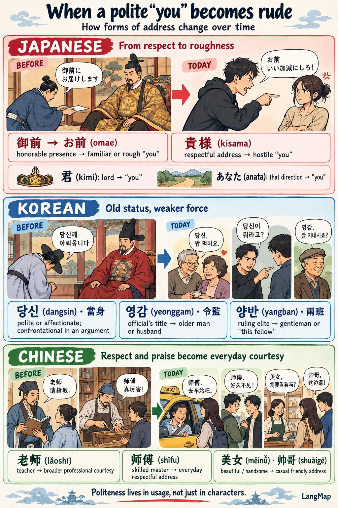

When a Polite "You" Becomes Rude
- Japanese お前 (omae) and 貴様 (kisama) can sound rough or openly hostile today.
- But both began in strongly respectful language.
- Korean and Chinese show similar changes too, although usually not as dramatically as Japanese.

Contents
Japanese: the honorable presence
Today, お前 (omae) is a familiar Japanese word for "you."
Between close friends or partners it can sometimes sound intimate. In the wrong situation, though, it can sound rough, aggressive or insulting.
Its origin is surprisingly polite:
御前
御 is honorific.
前 means "front" or "presence."
Originally, 御前 referred to the space before a deity or person of high rank, and then indirectly to the honored person themselves.
Instead of addressing someone important too directly, you referred respectfully to "the honorable presence."
By the early Edo period, お前, and especially お前様 (omae-sama), could be used with considerable respect.
Then the respect gradually wore away.
The word spread to equals, then to people below the speaker.
Today, お前 is usually anything but an honorific.
貴様: from honor to insult
And then there is an even more dramatic example:
貴様 (kisama)
貴 means "honorable" or "noble."
様 is itself an honorific.
To a modern reader, the characters look almost excessively polite.
And once, they were.
貴様 was used respectfully from the late medieval period into the early Edo period, especially in letters.
But over the centuries, its social value fell further and further.
Today, 貴様 is one of the most aggressive ways to say "you."
Japanese has seen this kind of change more than once.
君 (kimi) originally referred to a lord or ruler.
あなた (anata) originally meant something like "that direction over there."
Both eventually became ways of addressing another person, and their social tone continued to change.
Politeness, in other words, is not permanently stored inside a word.
Use can wear it down.
Korean: old status, weaker force
Korean has similar examples, although the changes are usually less extreme.
당신 (dangsin, 當身) can still be polite in writing or affectionate between spouses.
But say 당신 directly to a stranger, especially during an argument, and it can sound confrontational.
영감 (yeonggam, 令監) was once a respectful title for high-ranking officials in Joseon Korea.
Today it can simply refer to an older man or, in somewhat old-fashioned usage, a husband.
And 양반 (yangban, 兩班) once referred to the ruling elite of Joseon society.
Today, depending on tone and context, it can mean anything from "gentleman" to something closer to "this fellow."
The old status is still visible in the word, but much of its original weight has disappeared.
Chinese: respect becomes courtesy
Chinese shows a milder version of the same process.
The words usually do not fall all the way from honorific to insult.
Instead, respect or praise becomes weaker as an expression spreads to more and more people.
Take 老師 (lǎoshī).
Originally, it referred specifically to a teacher or respected master.
Today it can be used much more broadly for professionals, colleagues, business contacts, people in media, or even someone online who simply knows more about a subject.
Then there is 師傅 (shīfu).
The word once strongly suggested a skilled master or craftsman.
Today it is also a perfectly normal way to address a taxi driver, repair worker or other service worker.
The respect remains, but the idea of an actual master-apprentice relationship has largely disappeared.
And modern Chinese has another kind of example:
美女 (měinǚ), "beautiful woman"
帥哥 (shuàigē), "handsome guy"
Literally, they are compliments.
But in everyday speech they can function almost like casual forms of address for a young woman or man.
Nobody necessarily stopped to decide whether the person was exceptionally beautiful or handsome.
The compliment became a greeting.
How far a word can fall
So the pattern is similar, but the result is different.
In Japanese, a respectful expression can fall astonishingly far:
御前 → お前
貴様 → an insult
In Korean, titles and polite forms often lose some of their original status.
In Chinese, respect and praise more often fade into ordinary politeness.
A title becomes a courtesy.
A compliment becomes a greeting.
And sometimes a word that once placed someone above you ends up being the word you shout when you are angry with them.